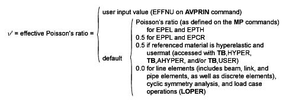

When a model has only one functional direction of strains and stress, comparison with an allowable value is straightforward. But when there is more than one component, the components are normally combined into one number to allow a comparison with an allowable. This section discusses different ways of doing that combination, representing different materials and/or technologies.
The principal strains are calculated from the strain components by the cubic equation:
(2–83) |
where:
| εo = principal strain (3 values) |
The three principal strains are labeled ε1, ε2, and ε3 (output as 1, 2, and 3 with strain items such as EPEL). The principal strains are ordered so that ε1 is the most positive and ε3 is the most negative.
The strain intensity εI (output as INT with strain items such as EPEL) is the largest of the absolute values of ε1 - ε2, ε2 - ε3, or ε3 - ε1. That is:
(2–84) |
The von Mises or equivalent strain εe (output as EQV with strain items such as EPEL) is computed as:
(2–85) |
where:
|  |
The principal stresses (σ1, σ2, σ3) are calculated from the stress components by the cubic equation:
(2–86) |
where:
| σo = principal stress (3 values) |
The three principal stresses are labeled σ1, σ2, and σ3 (output quantities S1, S2, and S3). The principal stresses are ordered so that σ1 is the most positive (tensile) and σ3 is the most negative (compressive).
The stress intensity σI (output as SINT) is the largest of the absolute values of σ1 - σ2, σ2 - σ3, or σ3 - σ1. That is:
 | (2–87) |
The von Mises or equivalent stress σe (output as SEQV) is computed as:
(2–88) |
or
(2–89) |
When ν' = ν (input as PRXY or NUXY on MP command), the equivalent stress is related to the equivalent strain through
(2–90) |
where:
| E = Young's modulus (input as EX on MP command) |
Use failure criteria to assess the possibility of failure of a material. Doing so allows the consideration of orthotropic materials, which might be much weaker in one direction than another. Failure criteria are available in POST1 for all plane, shell, and solid structural elements (using the TB or FC family of commands).
Possible failure of a material can be evaluated by up to 20 different criteria, of which 11 are predefined. They are evaluated at the top and bottom (or middle) of each layer at each of the in-plane integration points.
A failure criterion value ≥ 1 indicates failure.
The following topics related to the predefined failure criteria are available:

If the criterion used is the "strength index" (TWSI – see PRESOL,FAIL):
(2–93) |
and if the criterion used is the inverse of the "strength ratio" (TWSR – see PRESOL,FAIL):
(2–94) |
where:
| ξ3 = value of Tsai-Wu failure criterion |
| Cxy, Cyz, Cxz = x-y, y-z, x-z, respectively, coupling coefficient for Tsai-Wu theory |
For consistency, the program uses the inverse of "strength ratio" as the TWSR failure criterion. Similar to other failure criteria, a TWSR criterion indicates failure if its value is ≥ 1.
The Tsai-Wu failure criteria used here are 3-D versions of the failure criterion reported in Tsai and Hahn([191]) for the "strength index" and in Tsai([93]) for the "strength ratio". Apparent differences are:
The program input uses negative values for compression limits, whereas Tsai uses positive values for all limits.
The program uses Cxy instead of the used by Tsai and Hahn with Cxy being twice the value of .
The physical failure criteria are specially formulated to account for different damage mechanisms (fiber and matrix failure) in fiber-reinforced composite materials.
Predefined physical failure criteria include the following:
2.4.3.4.3. Puck Fiber Failure Criterion ([402])
(2–97) |
2.4.3.4.4. Puck Matrix Failure Criterion ([402])
(2–98) |
where:
| = stresses on an action plane parallel to the fibers |
| = four inclination parameters |
2.4.3.4.5. LaRc03 Fiber Failure Criterion ([403])
(2–99) |
where:
 = fracture toughness ratio between mode I and mode II = fracture toughness ratio between mode I and mode II |
| = 2-D stresses on the fiber misalignment (kinking) plane |
| = longitudinal friction coefficient |
| = in-plane shear strength |
| = tensile transverse strength |
2.4.3.4.6. LaRc03 Matrix Failure Criterion ([403])
(2–100) |
where:
 = fracture toughness ratio between mode I and mode II = fracture toughness ratio between mode I and mode II |
| = effective transverse and longitudinal stresses on an action plane parallel to fibers |
| = effective stresses on an action plane parallel to the misaligned fibers |
| = transverse shear strength |
| = initial fracture angle under pure transverse compression |
2.4.3.4.7. LaRc04 Fiber Failure Criterion ([404])
 | (2–101) |
= 3-D stresses on the fiber misalignment (kinking) plane
= derived from orthotropic material constants
2.4.3.4.8. LaRc04 Matrix Failure Criterion ([404])
(2–102) |
where:
| = transverse friction coefficient |
| = effective normal, transverse, and longitudinal stresses on an action plane parallel to the fibers |
| = effective stresses on the action plane parallel to the misaligned fibers |